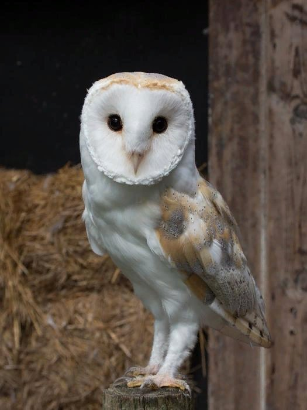

Первый параграф
Первый пункт
Второй пункт
Второй параграф
Форматирование в HTML5
Это выделенный текст
Это важный текст
Это зачеркнутый текст
Это недействительный текст
Это важный текст
Это текст курсивом
Это добавленный текст
Это подчеркнутый текст
Xi = Y2 + Z2
Настоящие совы (лат. Strigidae, от Strix «неясыть») — семейство хищных птиц отряда совообразных. К совиным относят такие роды как, например, ушастые совы, неясыти, сплюшки и филины.